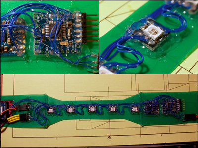
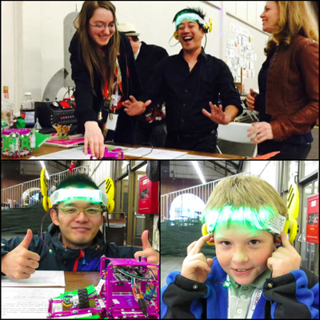

Headband (pt 1)
Read on below for the making of and fun photos of beta testing!
Why
The robot for my final project should be able to be controlled hands free. If the operator has their hands full (literally), but still needs to give feedback to the robots, it would be too cumbersome to go press buttons on a tablet.
It would be neat if I could have the robots respond if you begin feeling apprehensive. So I included a pulse sensor to detect heartbeat.
Skipping ahead a few weeks I guess, but wanted to get started on the input, output, and networking.
I started out wanting it to be brain controlled, but to get started am just going with an imu approach. An inspiration to this project is in the movie Big Hero 6 one of the characters wears a headband to control robots.
I wasn’t sure exactly how this could all be made together, especially with the flexibility aspect. So I started first with a prototype and will refine it, using everything new that I will learn!
Also... the headband does have servos on it moving wings. So if you wear it, you can turn into a robot kind of. :)
Making of
To start I made a cardboard model first and took some measurements. From there, noted the general sizes of the boards and made the design in gEDA. On the boards would actually be the breakout board modules -- because my design tolerances are not good enough for a soic chip, and dip packages would take up too much area. Set up the boards for etching and started the process.
After knowing the board dimensions, created the band pieces in Autodesk Inventor. Printed out a drawing of the pieces onto paper, traced the design onto a duo-tang, and cut it out. Glued the edges of the pieces down as well, because if a corner lifts it is easy for it to peel apart. There’s velcro at the end of the band to accommodate different head sizes.
Designed and 3d printed the servo holders in Inventor. The servo horn is sandwiched between two pieces. There’s a curved cover that goes over the last piece. The tabs on the servo holder were later glued onto the band.
Checked on the boards and it was no good. The resist detached from the boards.
I made a really stupid mistake of deciding that it would be better to use sharpie on the traces than it would be to clean it and try adding the resist again. This was not the right choice, and I feel bad for wasting copper, water, etchant, time. :(
Since the point of making this prototype was to see if it would all work, I decided to keep going but use breakout boards and wires. The detriment to this is that I would have to waste even more time wiring everything together, when the boards should have worked out but didn’t. Lame.
Aside: Yes, it is possible to mill a flex pcb- Adafruit posted a video showing a strip of ws2812b’s on Pyralux using an Othermill
Wired everything together and wrote a quick demo sketch to make sure that everything was working together.
Glued the boards to the band with a lot of glue so they would not pop off.
Test vid:
Covers
Next up was the covers over the electronics. This was printed in TPE (NinjaFlex). But first, had a problem with the prints that confused me for way too long. The answer was simply because the filament was coiled around the axel...

After fixing this, the covers were made. But they had issues bending. The middle one did not adapt to the shape of the band. I tried cutting spaces out of the pieces that attach to the band, but that still did not work. Then realised that the flat face was too thick.
Reprinted with less thickness and it worked! The cover could adapt to the shape of the band.
Added the wings and a piece of the duo-tang to cover the servo holder holes.
Wing:
Cover:
Small Improvements
After demonstrating it to friends, I noticed that there were some improvements that could be made.
The first was to be able to have different modes in the headband, so added 3 buttons. The first button is what sets the ‘home’ readings of the accel and gyro, then starts to send the pitch data through the xbee to the other robot.
Next was the cable. Ideally it would be best if the battery was added to the headband, or if there was a thinner tether to the battery pack. The small tether option will be better. For programming with the ftdi header though, the problem would still exist. Added a duo-tang strain relief (hopefully), that the cable goes through to prevent it from being pulled out and ripping off the cover.
Finally, the accelerometer alone was not very good at measuring the head tilt of a person. I dug out a gyro from my (retired) hockey playing humanoid. Attaching it was an ordeal, because there wasn’t any room for it... so it’s hot glued piggy backed to the accelerometer.
Code
The pulse sensor uses Timer 2. Standard servo library uses Timer1, but Neopixels library turns off interrupts when updating the leds -- and the Arduino servo library requires this. But, there are peripherals in the avr that can be used. The servos can get their pwm from a timer/counter. Timer1 is 16 bit, so this is used in waveform generation mode with a prescaler. It advances a counter every 8 cpu cycles, then is sent as pwm to the motors by setting an output compare register of the wanted pwm duty cycle to a pin. There are some values that depend on the clock speed of the avr. This is from the TiCo Servo documentation on Adafruit.
Whenever the servos move, the pulse sensor becomes unstable. It ‘glitches’ and detects too many pulses. Think this is caused by a quick decrease in voltage, but still have to test to make sure.
Using a complimentary filter for combining the accelerometer and gyro sensor readings to get an estimated pitch.
Complementary Filter
Here is the main part of the code that combines the accelerometer and gyro data together. It’s called the complementary filter, it is just a number that defines the ratio between the gyro and accel that gets combined into the actual pitch.
Zero the sensor to remove drift at the start of program and right after the button press:
x_home = analogRead(X_PIN); y_home = analogRead(Y_PIN); z_home = analogRead(Z_PIN); gyro_home = analogRead(GYRO_PIN); gyro_zero_voltage = ( gyro_home * max_voltage ) / 1023;
Accelerometer readings calculations:
xval = 5*(analogRead(X_PIN)/1023); yval = 5*(analogRead(Y_PIN)/1023); zval = 5*(analogRead(Z_PIN)/1023); x_acc = (xval-x_home)/acc_scale; y_acc = (yval-y_home)/acc_scale; z_acc = (zval-z_home)/acc_scale; acc_pitch = atan(x_acc / sqrt( pow(y_acc,2) + pow(z_acc,2) ) ); acc_roll = atan(y_acc / sqrt( pow(x_acc,2) + pow(z_acc,2) ) ); acc_pitch *= 180/PI; acc_roll *= 180/PI;
Gyro readings calculations:
gyro_voltage = ( analogRead(GYRO_PIN) * max_voltage ) / 1023;
gyro_rate = (gyro_voltage - gyro_zero_voltage) / gyro_scale;
if(gyro_rate > rotation_thresh || gyro_rate < -rotation_thresh) {
gyro_pitch = gyro_pitch + gyro_rate * (current_time-last_measure_time)/1000.0;
last_measure_time = current_time;
}
if(gyro_pitch > 360) gyro_pitch -= 360;
if(gyro_pitch < -360) gyro_pitch += 360;
Complementary filter:
pitch = alpha*gyro_pitch + (1-alpha)*acc_pitch;
Future
This was just a start. I have a better idea on how to fabricate this now, provided I can get access to the right tools (remote student). Really excited to see if it can be laser cut from one piece of delrin.
As for the boards, the best way to go seems to be a rigid pcb on both sides of the head, and perhaps vinyl cut copper tape for the front part with the leds... though I think that might be difficult to manufacture, so maybe just an actual flex pcb -- or rigid pcbs with wires going between them. For connecting the boards together, will probably just use ribbon cable. Another option would be a flexible interconnect cable, however not sure what the cost is of the connector component.
I might port the wings to Antimony, so that way it can be easier for other people to customise their own wings.
In the future revisions, will be using sensors that have multiple dof. Instead of just the one for the gyro. This way we will be able to measure more data.
Electronics
- ExtraCore (Arduino derivative)
- Pulse sensor
- ADXL335
- 2x 9g Micro servo
- 5x WS2812B breakout boards
- Xbee
- Xbee breakout board
- 3x Buttons
- Light sensor
- Gyro- MLX90609
- Portable phone charging battery pack
Background Info
The design tolerances of making my own boards is excessively large because I have to use 3d printed TPE, with a nozzle size of 0.4mm, as the resist on the copper. I tried laser printing onto photo paper, but the clothes iron does not reach the same temp as the laser printer to be able to transfer the toner onto the copper. I have made the resist work in the past, so it’s unfortunate that it did not work out this time.
Aside: Of course, I'm always looking for better ways of doing things, just finding the tools/supplies is sometimes difficult
Beta Testing
Here is the best part!!!!!!! Tested it with some people at RoboGames 2015. They were all able to control the robot.
In the top pic, Grant is controlling the robot to speed off the table, I’m reaching to catch it in time... :) Bottom left pic is an amazing humanoid robot builder, and right is a fan of all the robots.
Source Files
The source files can be found here
Design files are Autodesk Inventor. Circuit boards are gEDA. Code is just an Arduino sketch.
Mistakes made
- Not considering how this can be disassembled for transport
- Possibly not roughening the surface of the copper enough
- Not getting toner transfer method to work
- Filament spooling around holder and messing up the print
- Not considering extra space for future expandable options
Lessons learned
- If the resist is not on properly, then it won’t etch right!!!!!!!!!
- Sharpie permanent marker does not give good results as an etch resist
- My etching process fails more often than succeeds
Still wondering about
- Would it be possible to do gaze detection on the eye from the angle of the headband
- Why the resist did not adhere to the copper, when doing the same thing worked flawlessly in the past
- How to attach flexible things together permanently without using hot glue
- Power concerns- what will be the best way to isolate the servo and uc power
- Wondering if a thin piece of delrin could be laser cut to replicate the band faster, and all in one piece rather than using hot glue
- Finding a better way to attach the covers to the band
- Health concerns of having a radio and servos attached to your head
- How crazy / weird other people think this wearable is. Maybe should walk down a main street wearing it to see the reactions (<-- probably will not do this)
Other Observations
- Kids seem to really like it, even if it isn’t measuring brain waves
- The weight of the servos tends to move the headband down, which can be uncomfortable after a bit of time
- With some improvements, it can be a fun way to interact with the robots hand free